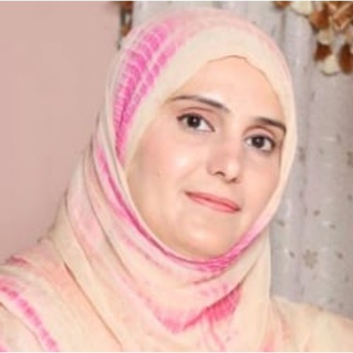

Najma Taimoor

Lecturer (~Assistant Professor) in Computer Science
Internet of Things and Security Research Centre
Cyber Assurance Lab
School of Computing and Mathematical Sciences
University of Greenwich
Old Royal Naval College
London, UK
SE10 9LS
E-mail: n.taimoor [AT_DOMAIN] gre [DOT] ac [DOT] uk
Phone: +44 (0)20 8331 85XX
Office: QMXXX (Queen Marry)


I am Lecturer in Computer Science at the University of Greenwich, UK. Prior to that I was a research assistant in the School of Design at the University of Greenwich, where I was part of an EYES project funded by EU. I am also a final year doctoral student in the Institute of Computer Technology at the Vienna University of Technology, Austria. I have also earned Masters in Healthcare and IT from the University of Applied Sciences, Austria with Distinction. My Masters thesis was funded by Erasmus grant, which was developed under the supervision of Prof. Lilian H. Tang at the University of Surrey, UK
My research interests are in:
- reliable healthcare
- resilient systems
- modelling and verification
News
Sep 2022I have joined a permanent role of Lecturer in Computer Science at the University of Greenwich, UK.
Aug 2022Our paper On the Validation of Multi-Level Personalised Health Condition Model has been accepted in DSD 2022.
Our paper Towards Multilevel Modelling and Monitoring of Real-time Personalised Health Conditions has been accepted in ETFA 2022.